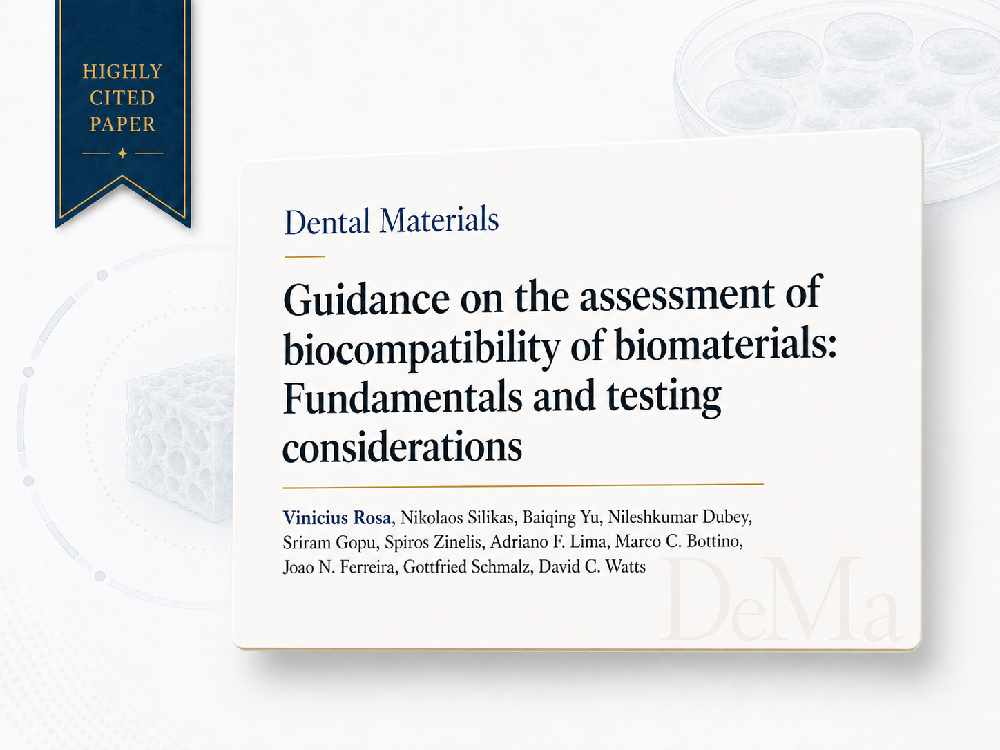

A/P Rosa's article on biocompatibility of dental materials highlighted among the most cited in Dental Materials
The 2025 Journal Citation Reports identified the article as the 5th highest contributor to the Dental Materials impact factor, with 29 citations in the JCR evaluation window.

Detailed data from the 2025 Journal Citation Reports (JCR) highlighted the international relevance of the article “Guidance on the assessment of biocompatibility of biomaterials: Fundamentals and testing considerations”, led by A/P Vinicius Rosa from NUS. Published in Dental Materials, the work was listed as the 5th article contributing most to the calculation of the journal’s Journal Impact Factor (JIF).
The article offers technical guidance for researchers evaluating the biocompatibility of new biomaterials, especially those intended for medical and dental applications. Instead of treating biological safety as an isolated test, the work proposes a more rigorous and integrated approach, considering the physicochemical characterisation of the material, the appropriate choice of cellular models, exposure conditions, and the critical interpretation of results.
The scientific community has been using this guide as a reference to support the design of robust biocompatibility studies.
The publication aligns with international regulatory requirements, including principles consistent with the ISO 10993 series and guidelines adopted by agencies such as the FDA and CE marking systems. The central objective is to reduce experimental biases, improve study reproducibility, and bring laboratory testing closer to real clinical use conditions. According to data indexed in the Web of Science for the JCR 2025 evaluation window, the article accumulated 29 relevant citations for the calculation of the journal’s impact factor.
More than a numerical indicator, the result shows how the scientific community has been using this guide as a reference to design more robust biocompatibility studies. By proposing clearer criteria for the assessment of toxicity and cellular response, the work contributes to one of the critical points of translational dentistry: transforming material innovation into reliable evidence for safe clinical applications. The presence of the article among the highest scientific impact works in Dental Materials reinforces the role of the NUS group in building more consistent standards for biomaterials research.